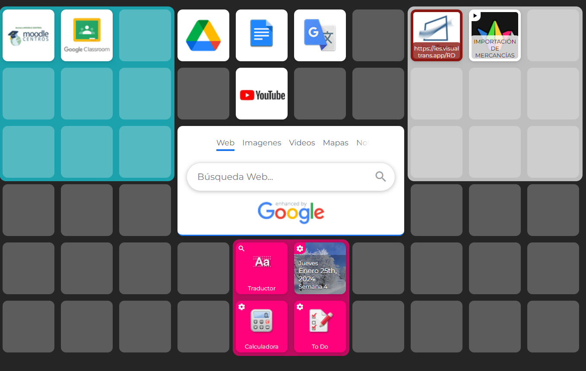

Durante el desarrollo de esta SDA contaréis con un enlace a Symbaloo que os facilitará el acceso a todo el material necesario para el desarrollo de la actividad. En dicho escritorio no sólo tenéis el enlace a MOODLE, sino a Google Docs, una herramienta con la que trabajaréis en grupo, y los videos en los que los distintos conceptos que trabajaréis en la tarea os resultarán de gran utilidad, añadido a todo el material que tenéis en Moodle
https://www.symbaloo.com/shared/AAAABFoSnMEAA41_liqraA==
